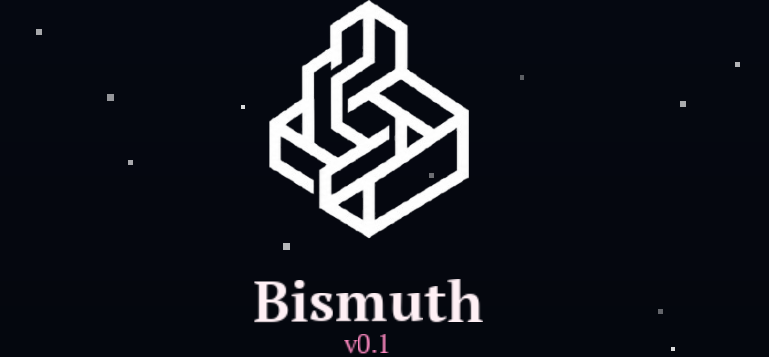
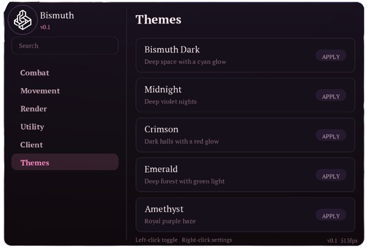
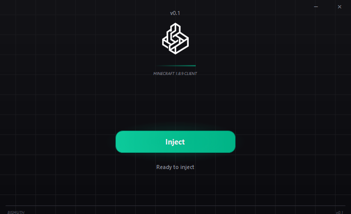

clean interface
a focused ui with everything where it should be.
bismuth is a clean and lightweight 1.8.x minecraft client designed around a simple experience and a polished interface.
no clutter. no unnecessary noise. just bismuth.
a focused ui with everything where it should be.
designed with a fast and responsive experience in mind.
choose between the regular jar and injectable client.




choose the build that works for you. — for 1.8.x
tap to expand — one at a time.
yes, we will not be taking any responsibility if you get banned, thats all up to you. the thing is that bismuth is mainly undetected and is able to bypass all major anticheats down to the extremely small and unknown ones as long as you can configure them. bismuth lite will also be able to completely bypass screenshares and with enough work most likely scanning tools like echo.
yes, we admit, bismuth was built with ai-assisted development while still being directed by humans. we understand that this may bring outrage since it is still "vibecoded slop" and we arent justifying our actions, but this was meant to be a private client anyways and we decided in the end game to make it public, free and open source.
the jar file is a drag and drop file that you put into your game, whereas the injector injects directly into minecraft as its running without replacing files. bismuth lite is the upcoming, lightweight screenshare bypass varient that is also injectable. the injector is also able to inject both the hybrid client and bismuth lite.
the installation of bismuth is extremely straightforward. go to the main part of our page, scroll down to the downloads page and pick whichever you want, whether you want the drag and drop jar file or the injector that can inject both the main client and the lite version.